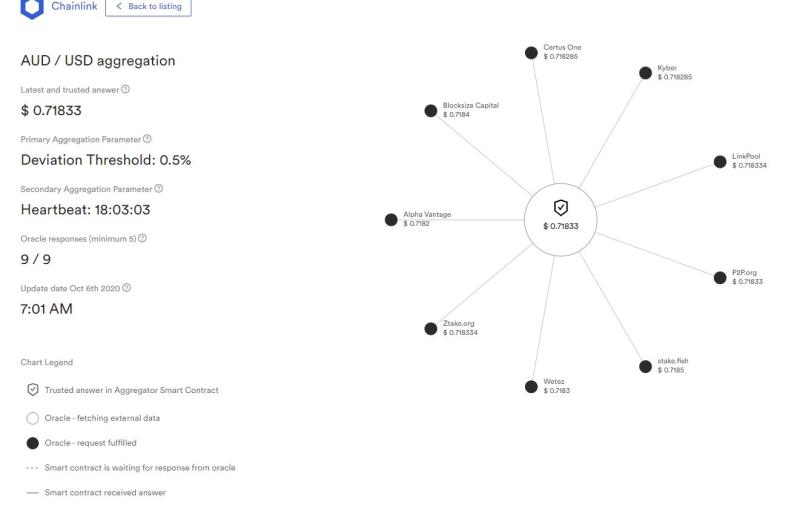
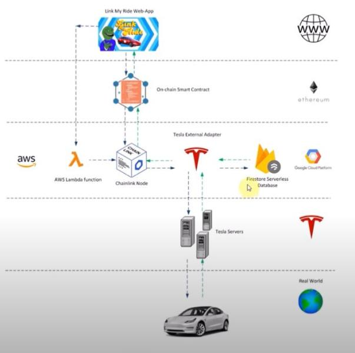
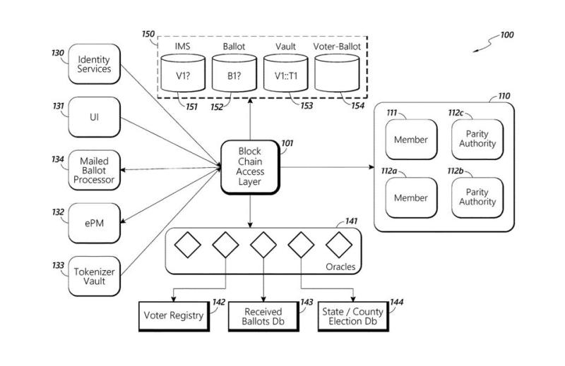

KABBAM
Quietly sprouting from the smouldering ash of the 2008 financial crisis was the pseudonymous publication of the Bitcoin whitepaper. Removing intermediary involvement of third-party financial institutions, the whitepaper detailed a vision of a global peer to peer electronic currency stored on a distributed ledger known as a blockchain [1]. A public distributed ledger/ blockchain records data and information regarding transactions, falsifying and editing past blocks of data is near impossible thanks to the buff cryptography that securing the chain. While Bitcoin isn’t the earliest conception of a blockchain, it is arguably the most recognizable.
2013, Bitcoin had succeeded through its experimental phase, rooting itself as a decentralized electronic cash system averaging 40,000 to 60,000 daily transactions [2]. The next step in crypto currencies advancing beyond digital cash sought the satiation of sophisticated contracts and digital agreements. The Ethereum whitepaper published by Vitalik Buterin in 2013 proposed a global, distributed, open sourced computational platform that would facilitate the creation and environment for smart contracts and decentralized applications (dApps) to be written and stored on [3]. Smart contracts are computer programs equipped with programmable logic that can fulfil execution based on parameters being met, negating the ever-present risk of relying on separate parties to follow through with their commitments that are naturally tied within traditional contracts that are not performed in trustless execution environments (TEEs). One can think of Ethereum as the iPhone and the decentralized applications as iPhone apps. Now that smart contracts have come into fruition there dwells the conundrum of reliably connecting trusted external data inputs with the parameters of a smart contract because blockchains are limited to communicating with themselves and cannot interact with external data sources, which in 80 precent of cases are essential to trigger the consequences of a smart contract in real time, e.g. did the parcel arrive, what was the quantity rainfall in a specific location, what is the price of gold per ounce. This is commonly known as the oracle problem, or the god protocol [4].
Driven by a community consensus model that incentivises honest behaviour while punishing the bad is Chainlink. Chainlink is an ongoing work in progress middleware oracle network built on top of Ethereum that links reliable off-chain live world data with smart contracts. The Chainlink network is blockchain agnostic, meaning it that it can be adapted with any blockchain and existing IT legacy system. Muting Sybil attacks on the network is made possible with the LINK token. Node operators act as data gophers to smart contracts [5].

Figure 1 Chainlink AUD/USD price feed oracle [6]
Here we see 9 node operators feeding the price of AUD / USD into an aggregator smart contract.
Every answer by each node is revealed simultaneously to prevent copying of answers. If an answer deviates outside of the set margin of error compared to the aggregated result, the node operator who produced the outlier response would lose their tokens they had staked for the job.
There are 1 billion tokens in total. 35% Were sold during the ICO. (Initial coin offering, initial distribution of tokens). 35% Are reserved for payments to node operators. 30% Are reserved for the Chainlink team to sell for future developments.
1. Node operators are paid in LINK for delivering high quality, accurate off-chain data to a smart contract.
2. Node operators stake their LINK tokens as collateral. Providing inaccurate/ false data will see node operators have their collateral seized and reputation tarnished, resulting in receiving less data fetching jobs.
If the Chainlink network or any proposed oracle solution becomes successful in the pursuit of achieving a protocol that delivers deterministic truth to Smart Contracts, one sector we’d likely see a positive acceleration in the sharing economy as decentralized applications begin to take the power from third party entities. The peer-to-peer sharing economy which is forecasted to grow from $14 Billion in 2014 to $355 Billion by 2025 [7], relies on contractual agreements.

Figure 2 Link-My-Ride-Architecture [8]
Link My Ride, a peer-to-peer car rental platform for Tesla vehicles, is a decentralized application demo that recently won 1st place in a hackathon. The team behind the project used Chainlink to connect Tesla’s API to an Ethereum smart contract, enabling two parties to outline a rental period, unlock the vehicle doors for the renter, record the length of time rented, calculate distance driven, determine the amount of battery usage, and automate rental payments including a bond. Or imagine an application identical to Uber that doesn’t seize 25% in commission fees on all fares! The knots of the insurance industry will also become untangled with benefits spilling both to the insurer and insured. If a farmer in a particular region of Australia fails to receive a set volume of rainfall for the season they will be instantly compensated and paid out insurance, the same applies for any flooding or damage that is the result of adverse weather events. One start-up tackling the idea of hedging weather risk is Arbol, an insurance start-up software platform tethering the end-user with weather risk management solutions combining machine learning, big data and Smart Contracts. The fetching and confirmation of truthful data will lend itself to the future of AI automation, white collar jobs are subject to being replaced by autonomous solutions, the world economic forum predicts that 30% of corporate audits will be performed by AI come 2025 [9].
A handful of us who’re seeking a career in an IT related field may find that their potential future skillset will involve incorporating blockchain and smart contract expertise in the architecture of application development or business agreements. For any friends or family whose work intercepts with any involvement of supply chains may be already using blockchain technology to confirm the legitimacy of the origins and quality of a product. Distributed ledgers could begin to carry our identities and credentials. Perhaps we’ll have fewer pieces of rectangular plastic in our wallets to show for it! Fresh protocols for elections are already being floated in the United States. The United States Postal Service recently filed a patent proposing a new voting system harnessing the security that blockchain technology has to offer. In the case of a pandemic where we’re urged to stay at home, postal voting in federal elections could is a viable timeline outcome.

USPS Patent for the architecture of a new voting system [10]
Smart contracts will give contractual law a new overdue recalibration. Blockchain is poised to be a single piece of many that will comprise the advancement of the so called ‘fourth industrial revolution’, jobs being created and displaced in the coming. It’s challenging to speculate with astute accuracy just how underestimated or inflated our expectations contrast to the future outcome of an emerging technology can be, especially when blockchain technology has garnered substantial hype over previous years because of the “get rich quick” mania that has clouded the technology. Blockchain will run under the hood of future businesses and governments, ultimately remain out of the general public's attention. It will play a vital role for accurate transparent or private impermeable record keeping, with most of the population remaining unaware of its presence, just how your nose is constantly in our field of vision yet is completely ignored.
Link: [1]. The 5 Latest Cyber Security Technologies For Your Business. [online] Available at:
Link: [2] TechBeacon. 2020. Top 5 Emerging Information Security Technologies. [online] Available at:
Link: [3]Nibusinessinfo.co.uk. 2020. Common Cyber Security Measures | Nibusinessinfo.Co.Uk. [online] Available at:
Link: [4]Business.gov.au. 2020. How To Protect Your Business From Cyber Threats | Business.Gov.Au. [online] Available at:
Link: [5]Infocyte. 2020. 5 Amazing Applications Of Deep Learning In Cybersecurity - Infocyte. [online] Available at:
Link: [6]En.wikipedia.org. 2020. Cloud Computing Security. [online] Available at: